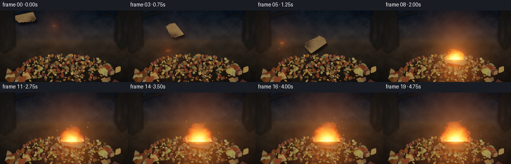
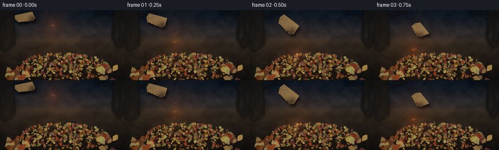
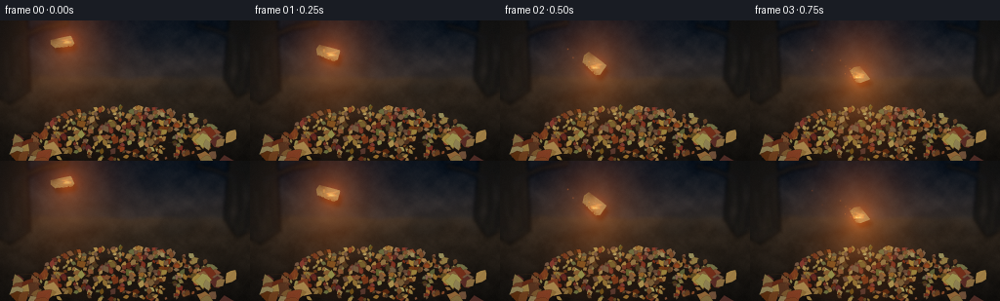

CODING AGENTS AS PIXEL WORLD MODELS
traex/DeepSeek-V4.1-Flash · material_0025
点击播放 · 原生 RGB 像素
逐轮保存的候选
回放视频、检查图与代码变化。
每份候选均可单独播放。实际图片检查记录在下方工具轨迹中。
候选 01播放与检查图
点击播放 · 原生 RGB 像素

展开代码变化
--- 上一保存版本
+++ 本次保存版本
@@ -0,0 +1,950 @@
+from __future__ import annotations
+
+import math
+from pathlib import Path
+
+import cv2
+import numpy as np
+from PIL import Image, ImageDraw, ImageFilter
+
+import artifact_io
+
+
+WIDTH = 256
+HEIGHT = 144
+FRAMES = 20
+FPS = 4.0
+SS = 4
+SW = WIDTH * SS
+SH = HEIGHT * SS
+
+ROOT = Path(__file__).resolve().parent
+
+
+def clamp01(value):
+ return np.clip(value, 0.0, 1.0)
+
+
+def smoothstep(edge0, edge1, value):
+ denominator = np.maximum(np.asarray(edge1) - np.asarray(edge0), 1e-6)
+ t = clamp01((value - edge0) / denominator)
+ return t * t * (3.0 - 2.0 * t)
+
+
+def value_noise(height, width, rng, cell):
+ grid_h = int(math.ceil(height / cell)) + 3
+ grid_w = int(math.ceil(width / cell)) + 3
+ grid = rng.random((grid_h, grid_w), dtype=np.float32)
+ return cv2.resize(grid, (width, height), interpolation=cv2.INTER_CUBIC)
+
+
+def fbm(height, width, rng, base_cell, octaves=5, gain=0.52):
+ result = np.zeros((height, width), dtype=np.float32)
+ amplitude = 1.0
+ total = 0.0
+ cell = base_cell
+ for _ in range(octaves):
+ result += amplitude * value_noise(height, width, rng, cell)
+ total += amplitude
+ amplitude *= gain
+ cell = max(2.0, cell * 0.48)
+ result /= total
+ result -= result.min()
+ result /= max(float(result.max()), 1e-6)
+ return result
+
+
+def screen(base, layer):
+ return 1.0 - (1.0 - np.clip(base, 0.0, 1.0)) * (
+ 1.0 - np.clip(layer, 0.0, 1.0)
+ )
+
+
+def draw_soft_disc(field, cx, cy, radius, strength):
+ radius = max(radius, 0.35)
+ x0 = max(0, int(math.floor((cx - radius * 2.4) * SS)))
+ x1 = min(SW, int(math.ceil((cx + radius * 2.4) * SS)) + 1)
+ y0 = max(0, int(math.floor((cy - radius * 2.4) * SS)))
+ y1 = min(SH, int(math.ceil((cy + radius * 2.4) * SS)) + 1)
+ if x1 <= x0 or y1 <= y0:
+ return
+ yy, xx = np.mgrid[y0:y1, x0:x1].astype(np.float32)
+ xx = xx / SS
+ yy = yy / SS
+ rr = ((xx - cx) ** 2 + (yy - cy) ** 2) / (radius * radius)
+ field[y0:y1, x0:x1] += np.exp(-rr * 2.2).astype(np.float32) * strength
+
+
+def make_leaf(rng, cx, cy, length, width, angle, color, layer=0):
+ raw = np.array(
+ [
+ (0.00, -0.50),
+ (0.34, -0.33),
+ (0.76, -0.08),
+ (0.57, 0.23),
+ (0.00, 0.55),
+ (-0.48, 0.27),
+ (-0.82, 0.00),
+ (-0.42, -0.28),
+ ],
+ dtype=np.float32,
+ )
+ raw[:, 0] += rng.uniform(-0.08, 0.08, len(raw))
+ raw[:, 1] += rng.uniform(-0.055, 0.055, len(raw))
+ raw[:, 0] *= width
+ raw[:, 1] *= length
+ theta = math.radians(angle)
+ c, s = math.cos(theta), math.sin(theta)
+ pts = np.empty_like(raw)
+ pts[:, 0] = raw[:, 0] * c - raw[:, 1] * s + cx
+ pts[:, 1] = raw[:, 0] * s + raw[:, 1] * c + cy
+ base = np.array(color, dtype=np.float32)
+ shade = rng.uniform(0.76, 1.16)
+ lit = np.clip(base * shade + rng.uniform(-9, 9, 3), 0, 255).astype(np.uint8)
+ edge = np.clip(lit.astype(np.float32) * 0.66, 0, 255).astype(np.uint8)
+ vein = np.clip(lit.astype(np.float32) * 1.24 + 10, 0, 255).astype(np.uint8)
+ return {
+ "pts": pts,
+ "color": tuple(int(v) for v in lit),
+ "edge": tuple(int(v) for v in edge),
+ "vein": tuple(int(v) for v in vein),
+ "length": length,
+ "width": width,
+ "cx": cx,
+ "cy": cy,
+ "layer": layer,
+ "highlight_side": int(rng.integers(0, 2)),
+ }
+
+
+def draw_leaf(draw, leaf, alpha=255, glow=0.0):
+ pts = [(float(x * SS), float(y * SS)) for x, y in leaf["pts"]]
+ color = tuple(leaf["color"]) + (int(alpha),)
+ draw.polygon(pts, fill=color)
+ draw.line(
+ pts + [pts[0]],
+ fill=tuple(leaf["edge"]) + (int(alpha * 0.78),),
+ width=max(1, int(SS * 0.34)),
+ )
+ center = (leaf["cx"] * SS, leaf["cy"] * SS)
+ p0 = (leaf["pts"][0][0] * SS, leaf["pts"][0][1] * SS)
+ p1 = (leaf["pts"][4][0] * SS, leaf["pts"][4][1] * SS)
+ draw.line(
+ [p0, center, p1],
+ fill=tuple(leaf["vein"]) + (int(alpha * 0.58),),
+ width=max(1, int(SS * 0.30)),
+ )
+ if glow > 0:
+ hot = (255, int(112 + 70 * glow), int(24 + 38 * glow), int(170 * glow))
+ draw.line(
+ [pts[leaf["highlight_side"]], center],
+ fill=hot,
+ width=max(1, int(SS * 0.46)),
+ )
+
+
+def make_background(rng):
+ yy, xx = np.mgrid[0:SH, 0:SW].astype(np.float32)
+ yy /= SS
+ xx /= SS
+
+ sky_t = smoothstep(0, 78, yy)
+ top = np.array([17.0, 22.0, 29.0], dtype=np.float32)
+ low = np.array([58.0, 48.0, 43.0], dtype=np.float32)
+ sky = top[None, None, :] * (1 - sky_t[..., None]) + low[None, None, :] * sky_t[..., None]
+
+ ground_t = smoothstep(58, 142, yy)
+ ground_top = np.array([46.0, 36.0, 27.0], dtype=np.float32)
+ ground_low = np.array([24.0, 20.0, 16.0], dtype=np.float32)
+ ground = (
+ ground_top[None, None, :] * (1 - ground_t[..., None])
+ + ground_low[None, None, :] * ground_t[..., None]
+ )
+
+ broad = fbm(SH, SW, rng, SS * 42, octaves=4)
+ medium = fbm(SH, SW, rng, SS * 13, octaves=5)
+ fine = fbm(SH, SW, rng, SS * 3.2, octaves=4)
+ horizon = 58.0 + 5.0 * (broad - 0.5)
+ ground_mask = smoothstep(horizon - 3.5, horizon + 4.0, yy)
+ image = sky * (1 - ground_mask[..., None]) + ground * ground_mask[..., None]
+
+ texture = (medium - 0.5) * 17.0 + (fine - 0.5) * 7.0
+ image += texture[..., None] * np.array([0.72, 0.60, 0.50])[None, None, :]
+ image += (
+ np.exp(-((yy - 59.0) / 10.0) ** 2)[..., None]
+ * np.array([17.0, 12.0, 9.0])[None, None, :]
+ * ground_mask[..., None]
+ )
+
+ image = np.clip(image, 0, 255).astype(np.uint8)
+ base = Image.fromarray(image, "RGB").convert("RGBA")
+
+ distant = Image.new("RGBA", (SW, SH), (0, 0, 0, 0))
+ d = ImageDraw.Draw(distant)
+ for i in range(24):
+ cx = rng.uniform(-12, WIDTH + 12) * SS
+ cy = rng.uniform(50, 70) * SS
+ rx = rng.uniform(9, 26) * SS
+ ry = rng.uniform(5, 13) * SS
+ value = int(rng.uniform(18, 37))
+ d.ellipse(
+ (cx - rx, cy - ry, cx + rx, cy + ry),
+ fill=(value + 4, value + 2, value - 1, int(rng.uniform(65, 125))),
+ )
+ distant = distant.filter(ImageFilter.GaussianBlur(radius=SS * 4.0))
+ base = Image.alpha_composite(base, distant)
+
+ trunks = Image.new("RGBA", (SW, SH), (0, 0, 0, 0))
+ t = ImageDraw.Draw(trunks)
+ t.polygon(
+ [(-7 * SS, 0), (28 * SS, 0), (31 * SS, 72 * SS), (10 * SS, 86 * SS), (-6 * SS, 76 * SS)],
+ fill=(27, 23, 19, 235),
+ )
+ t.polygon(
+ [(234 * SS, 0), (263 * SS, 0), (263 * SS, 69 * SS), (243 * SS, 79 * SS), (229 * SS, 60 * SS)],
+ fill=(25, 22, 19, 235),
+ )
+ t.line(
+ [(13 * SS, 20 * SS), (44 * SS, 7 * SS), (70 * SS, 2 * SS)],
+ fill=(28, 24, 20, 190),
+ width=6 * SS,
+ )
+ t.line(
+ [(242 * SS, 19 * SS), (221 * SS, 10 * SS), (201 * SS, 5 * SS)],
+ fill=(27, 23, 20, 175),
+ width=5 * SS,
+ )
+ for i in range(28):
+ x = rng.uniform(2, 26) * SS if i % 2 == 0 else rng.uniform(233, 255) * SS
+ y = rng.uniform(8, 76) * SS
+ length = rng.uniform(8, 26) * SS
+ t.line(
+ [(x, y), (x + rng.uniform(-2, 2) * SS, y + length)],
+ fill=(48, 39, 31, 72),
+ width=max(1, int(SS * 0.5)),
+ )
+ trunks = trunks.filter(ImageFilter.GaussianBlur(radius=SS * 1.8))
+ base = Image.alpha_composite(base, trunks)
+
+ debris = Image.new("RGBA", (SW, SH), (0, 0, 0, 0))
+ db = ImageDraw.Draw(debris)
+ for _ in range(90):
+ x = rng.uniform(0, WIDTH) * SS
+ y = rng.uniform(61, 143) * SS
+ length = rng.uniform(1.0, 7.0) * SS
+ angle = rng.uniform(0, math.pi)
+ x2 = x + math.cos(angle) * length
+ y2 = y + math.sin(angle) * length * 0.36
+ value = int(rng.uniform(23, 55))
+ db.line(
+ [(x, y), (x2, y2)],
+ fill=(value + 7, value + 2, value - 3, int(rng.uniform(35, 100))),
+ width=max(1, int(SS * rng.uniform(0.3, 0.8))),
+ )
+ debris = debris.filter(ImageFilter.GaussianBlur(radius=SS * 0.9))
+ base = Image.alpha_composite(base, debris)
+ return base.convert("RGB")
+
+
+LEAF_COLORS = [
+ (126, 70, 34),
+ (157, 91, 41),
+ (181, 125, 58),
+ (104, 72, 42),
+ (139, 54, 29),
+ (171, 150, 79),
+ (91, 90, 51),
+ (132, 94, 61),
+ (82, 53, 34),
+ (191, 139, 69),
+ (110, 49, 31),
+]
+
+
+def build_pile(rng):
+ leaves = []
+ for i in range(410):
+ r = math.sqrt(float(rng.random()))
+ theta = rng.uniform(0, math.tau)
+ cx = 129.0 + 94.0 * r * math.cos(theta)
+ cy = 117.0 + 28.0 * r * math.sin(theta) - 5.0 * (1.0 - r * r)
+ if rng.random() < 0.14:
+ cx = rng.uniform(34, 224)
+ cy = rng.uniform(104, 143)
+ length = rng.uniform(3.8, 9.2) * (0.84 + 0.22 * (1.0 - r))
+ width = length * rng.uniform(0.38, 0.58)
+ angle = rng.uniform(0, 360)
+ color = LEAF_COLORS[int(rng.integers(0, len(LEAF_COLORS)))]
+ layer = 0 if rng.random() < 0.76 else 1
+ leaves.append(make_leaf(rng, cx, cy, length, width, angle, color, layer))
+
+ for _ in range(34):
+ side = -1 if rng.random() < 0.5 else 1
+ cx = 129.0 + side * rng.uniform(74, 113)
+ cy = rng.uniform(112, 148)
+ length = rng.uniform(10, 20)
+ width = length * rng.uniform(0.40, 0.58)
+ color = LEAF_COLORS[int(rng.integers(0, len(LEAF_COLORS)))]
+ leaves.append(make_leaf(rng, cx, cy, length, width, rng.uniform(0, 360), color, 2))
+ return leaves
+
+
+def draw_pile_layer(base, leaves, rng):
+ canvas = base.convert("RGBA")
+ overlay = Image.new("RGBA", (SW, SH), (0, 0, 0, 0))
+ draw = ImageDraw.Draw(overlay)
+ draw.ellipse(
+ (29 * SS, 99 * SS, 231 * SS, 145 * SS),
+ fill=(29, 21, 15, 150),
+ )
+ for _ in range(22):
+ x1 = rng.uniform(34, 224) * SS
+ y1 = rng.uniform(103, 142) * SS
+ x2 = x1 + rng.uniform(-24, 24) * SS
+ y2 = y1 + rng.uniform(-5, 5) * SS
+ draw.line(
+ [(x1, y1), (x2, y2)],
+ fill=(48, 33, 23, int(rng.uniform(100, 190))),
+ width=max(1, int(SS * rng.uniform(0.4, 1.2))),
+ )
+ for leaf in sorted(leaves, key=lambda item: (item["layer"], item["cy"])):
+ draw_leaf(draw, leaf)
+ overlay = overlay.filter(ImageFilter.GaussianBlur(radius=SS * 0.10))
+ return Image.alpha_composite(canvas, overlay).convert("RGB")
+
+
+def make_cardboard_patches(rng):
+ pw, ph = 208, 136
+ mask_img = Image.new("L", (pw, ph), 0)
+ md = ImageDraw.Draw(mask_img)
+ poly = [(17, 27), (188, 12), (201, 101), (177, 127), (37, 121), (9, 73)]
+ md.polygon(poly, fill=255)
+ for _ in range(22):
+ x = rng.uniform(12, 200)
+ y = rng.choice([13, 121])
+ md.ellipse((x - 4, y - 3, x + 4, y + 3), fill=0)
+ mask = np.asarray(mask_img, dtype=np.float32) / 255.0
+
+ yy, xx = np.mgrid[0:ph, 0:pw].astype(np.float32)
+ noise = fbm(ph, pw, rng, 13, octaves=4)
+ fine = fbm(ph, pw, rng, 3.0, octaves=3)
+ base = np.zeros((ph, pw, 3), dtype=np.float32)
+ base[..., 0] = 157 + 24 * (xx / pw) - 16 * (yy / ph)
+ base[..., 1] = 116 + 18 * (xx / pw) - 14 * (yy / ph)
+ base[..., 2] = 72 + 9 * (xx / pw) - 13 * (yy / ph)
+ base += ((noise - 0.5) * 22 + (fine - 0.5) * 9)[..., None]
+
+ texture = Image.fromarray(np.clip(base, 0, 255).astype(np.uint8), "RGB")
+ td = ImageDraw.Draw(texture, "RGBA")
+ for y in range(20, 122, 8):
+ pts = []
+ for x in range(14, 204, 7):
+ pts.append((x, y + 1.7 * math.sin(x * 0.11 + y * 0.31)))
+ td.line(pts, fill=(87, 61, 40, 76), width=1)
+ for _ in range(70):
+ x = rng.uniform(20, 194)
+ y = rng.uniform(18, 119)
+ length = rng.uniform(2, 10)
+ td.line(
+ [(x, y), (x + length, y + rng.uniform(-1, 1))],
+ fill=(209, 169, 112, int(rng.uniform(18, 58))),
+ width=1,
+ )
+ td.line([(25, 73), (58, 68), (88, 70)], fill=(74, 50, 33, 150), width=2)
+ td.line([(142, 101), (163, 96), (190, 97)], fill=(69, 47, 31, 120), width=2)
+ base = np.asarray(texture, dtype=np.float32)
+
+ dist_burn = np.sqrt((xx - 176.0) ** 2 + (yy - 92.0) ** 2)
+ burn = clamp01(1.0 - dist_burn / 66.0) ** 1.45
+ burn += 0.45 * clamp01(1.0 - np.abs(yy - 112.0) / 13.0) * (xx > 104)
+ burn = clamp01(burn)
+ char_color = np.array([41.0, 32.0, 27.0], dtype=np.float32)
+ fresh = base * (1 - 0.82 * burn[..., None]) + char_color * (0.82 * burn[..., None])
+
+ heavy = clamp01(1.0 - np.sqrt((xx - 154.0) ** 2 + (yy - 81.0) ** 2) / 112.0) ** 1.25
+ charred = fresh * (0.52 + 0.12 * noise[..., None]) + np.array([28, 24, 21]) * 0.35
+ charred = charred * (1 - 0.65 * heavy[..., None]) + np.array([31, 27, 24]) * 0.65 * heavy[..., None]
+
+ def to_rgba(rgb):
+ rgba = np.empty((ph, pw, 4), dtype=np.uint8)
+ rgba[..., :3] = np.clip(rgb, 0, 255).astype(np.uint8)
+ rgba[..., 3] = (mask * 255).astype(np.uint8)
+ return rgba
+
+ return to_rgba(fresh), to_rgba(charred), mask
+
+
+def cardboard_state(frame):
+ if frame < 7:
+ p = min(1.0, (frame + 0.55) / 7.35)
+ x = 43.0 + 102.0 * (p ** 1.04) + 2.5 * math.sin(math.pi * p)
+ y = 13.0 + 86.0 * (p ** 1.62)
+ angle = -34.0 + 229.0 * p + 9.0 * math.sin(math.tau * 1.6 * p)
+ foreshorten = 0.58 + 0.42 * abs(math.cos(math.tau * 1.35 * p + 0.5))
+ scale = 0.84 + 0.10 * math.sin(math.pi * p)
+ char = 0.16 + 0.18 * p
+ visible = 1.0
+ else:
+ age = frame - 7
+ x = 145.0 + 0.8 * math.sin(age * 0.37)
+ y = 99.2 + 0.55 * age
+ angle = 196.0 + 3.0 * math.sin(age * 0.43)
+ foreshorten = 0.73
+ scale = 0.92
+ char = min(0.96, 0.38 + 0.075 * age)
+ visible = max(0.18, 1.0 - max(0, age - 8) * 0.075)
+ return {
+ "x": x,
+ "y": y,
+ "angle": angle,
+ "foreshorten": foreshorten,
+ "scale": scale,
+ "char": char,
+ "visible": visible,
+ }
+
+
+def patch_matrix(state, pw, ph, offset_x=0.0, offset_y=0.0):
+ theta = math.radians(state["angle"])
+ c, s = math.cos(theta), math.sin(theta)
+ scale = state["scale"]
+ sx = scale
+ sy = scale * state["foreshorten"]
+ cx = (state["x"] + offset_x) * SS
+ cy = (state["y"] + offset_y) * SS
+ local_cx = pw * 0.5
+ local_cy = ph * 0.5
+ a = sx * c
+ b = -sx * s
+ d = sy * s
+ e = sy * c
+ tx = cx - (a * local_cx + b * local_cy)
+ ty = cy - (d * local_cx + e * local_cy)
+ return np.array([[a, b, tx], [d, e, ty]], dtype=np.float32)
+
+
+def composite_cardboard(canvas, state, fresh, charred, mask):
+ if state["visible"] <= 0.02:
+ return canvas
+ ph, pw = mask.shape
+ matrix = patch_matrix(state, pw, ph)
+ shadow_matrix = patch_matrix(state, pw, ph, offset_x=3.0, offset_y=5.5)
+ shadow_mask = cv2.warpAffine(
+ mask,
+ shadow_matrix,
+ (SW, SH),
+ flags=cv2.INTER_LINEAR,
+ borderMode=cv2.BORDER_CONSTANT,
+ borderValue=0,
+ )
+ shadow_mask = cv2.GaussianBlur(shadow_mask, (0, 0), SS * 1.8)
+ shadow = np.zeros((SH, SW, 4), dtype=np.uint8)
+ shadow[..., 3] = np.clip(shadow_mask * 135, 0, 255).astype(np.uint8)
+ canvas = Image.alpha_composite(canvas.convert("RGBA"), Image.fromarray(shadow, "RGBA"))
+
+ alpha = state["char"]
+ patch = fresh.astype(np.float32) * (1 - alpha) + charred.astype(np.float32) * alpha
+ patch[..., :3] *= 0.86 + 0.14 * state["visible"]
+ patch[..., 3] *= state["visible"]
+ warped = cv2.warpAffine(
+ patch,
+ matrix,
+ (SW, SH),
+ flags=cv2.INTER_LINEAR,
+ borderMode=cv2.BORDER_CONSTANT,
+ borderValue=(0, 0, 0, 0),
+ )
+ return Image.alpha_composite(canvas, Image.fromarray(warped.astype(np.uint8), "RGBA"))
+
+
+def burn_point(state, pw, ph):
+ theta = math.radians(state["angle"])
+ c, s = math.cos(theta), math.sin(theta)
+ ox = 62.0
+ oy = 40.0
+ sx = state["scale"]
+ sy = state["scale"] * state["foreshorten"]
+ return (
+ state["x"] + sx * c * ox - sx * s * oy,
+ state["y"] + sy * s * ox + sy * c * oy,
+ )
+
+
+def fire_state(frame):
+ card = cardboard_state(frame)
+ if frame < 7:
+ bx, by = burn_point(card, 208, 136)
+ strength = 0.16 + 0.08 * (frame / 7.0)
+ height = 4.8 + 2.3 * (frame / 7.0)
+ width = 4.2 + 1.8 * (frame / 7.0)
+ smoke = 0.12
+ spread = 0.0
+ else:
+ age = frame - 7
+ grow = 1.0 - math.exp(-age / 3.5)
+ bx = 143.5 + 0.7 * math.sin(age * 0.63)
+ by = 99.0 + 0.35 * math.sin(age * 0.29)
+ strength = 0.55 + 0.62 * grow
+ height = 9.0 + 33.0 * grow
+ width = 8.0 + 22.0 * grow
+ smoke = 0.24 + 0.62 * grow
+ spread = grow
+ flash = 1.45 * math.exp(-((frame - 7.4) / 0.75) ** 2)
+ return {
+ "x": bx,
+ "y": by,
+ "strength": strength + flash,
+ "height": height * (1.0 + 0.35 * flash),
+ "width": width * (1.0 + 0.45 * flash),
+ "smoke": smoke,
+ "spread": spread,
+ "flash": flash,
+ }
+
+
+def add_flame_tongue(emissive, tex_a, tex_b, tex_c, fire, frame, seed, height_scale, width_scale, sway, phase):
+ height = max(1.2, fire["height"] * height_scale)
+ width = max(0.9, fire["width"] * width_scale)
+ bx = fire["x"] + sway * 0.16
+ by = fire["y"]
+ margin = abs(sway) + width * 2.1 + 5.0
+ x0 = max(0, int((bx - margin) * SS))
+ x1 = min(SW, int((bx + margin) * SS) + 1)
+ y0 = max(0, int((by - height - 4.0) * SS))
+ y1 = min(SH, int((by + 3.0) * SS) + 1)
+ if x1 <= x0 or y1 <= y0:
+ return
+ yy, xx = np.mgrid[y0:y1, x0:x1].astype(np.float32)
+ yi = np.clip(yy.astype(np.int32), 0, SH - 1)
+ xi = np.clip(xx.astype(np.int32), 0, SW - 1)
+ yy = yy / SS
+ xx = xx / SS
+ u = (by - yy) / height
+ valid = (u >= 0.0) & (u <= 1.0)
+ uc = np.clip(u, 0.0, 1.0)
+
+ shift_x = int((seed * 37 + frame * 17) % SW)
+ shift_y = int((seed * 53 + frame * 11) % SH)
+ n1 = tex_a[(yi + shift_y) % SH, (xi + shift_x) % SW]
+ n2 = tex_b[(yi + shift_y * 2 + 19) % SH, (xi + shift_x * 2 + 41) % SW]
+ n3 = tex_c[(yi + shift_y * 3 + 7) % SH, (xi + shift_x * 3 + 23) % SW]
+
+ phase_now = phase + frame * 1.22
+ center = bx + sway * (uc ** 1.34) * np.sin(math.tau * 1.18 * uc + phase_now)
+ center += (n1 - 0.5) * (0.9 + 2.6 * uc) * (0.5 + 0.5 * width_scale)
+ profile = width * (0.30 + 0.70 * (1.0 - uc) ** 0.62)
+ profile *= 0.62 + 0.62 * n2
+ q = np.abs(xx - center) / np.maximum(profile, 0.18)
+ body = 1.0 - smoothstep(0.62, 1.18, q)
+ vertical = (1.0 - uc) ** 0.30
+ texture = 0.66 + 0.48 * n3
+ intensity = body * vertical * texture * fire["strength"] * valid
+ intensity *= 0.72 + 0.34 * (1.0 - uc)
+
+ hot = np.exp(-((q / 0.53) ** 2)) * (1.0 - 0.70 * uc)
+ hot = hot ** 1.15
+ outer = np.array([1.0, 0.16, 0.018], dtype=np.float32)
+ middle = np.array([1.0, 0.48, 0.045], dtype=np.float32)
+ core = np.array([1.0, 0.87, 0.47], dtype=np.float32)
+ color = outer[None, None, :] * (1 - hot[..., None])
+ color += middle[None, None, :] * (hot * (1 - hot * 0.52))[..., None]
+ color += core[None, None, :] * (hot * hot * 0.72)[..., None]
+ emissive[y0:y1, x0:x1] += color * intensity[..., None] * 0.84
+
+
+def render_fire(emissive, tex_a, tex_b, tex_c, fire, frame):
+ tongues = [
+ (0.0, 1.00, 1.00, 4.8, 0.4),
+ (-0.38, 0.74, 0.74, -3.8, 1.8),
+ (0.34, 0.69, 0.72, 3.1, 3.5),
+ (-0.18, 0.52, 0.52, 2.3, 5.1),
+ (0.17, 0.45, 0.48, -2.6, 6.4),
+ (0.02, 0.33, 0.36, 1.2, 8.0),
+ ]
+ for index, (offset, hs, ws, sway, phase) in enumerate(tongues):
+ if frame < 7 and index > 1:
+ continue
+ fire_copy = dict(fire)
+ fire_copy["x"] = fire["x"] + offset * fire["width"]
+ add_flame_tongue(
+ emissive,
+ tex_a,
+ tex_b,
+ tex_c,
+ fire_copy,
+ frame,
+ index + 3,
+ hs,
+ ws,
+ sway,
+ phase,
+ )
+
+ glow = np.zeros_like(emissive[..., 0])
+ draw_soft_disc(glow, fire["x"], fire["y"] - fire["height"] * 0.18, 10 + fire["width"] * 0.58, 0.55 * fire["strength"])
+ glow = cv2.GaussianBlur(glow, (0, 0), SS * 5.0)
+ emissive += glow[..., None] * np.array([1.0, 0.22, 0.025], dtype=np.float32)
+
+
+def render_embers(emissive, rng, fire, frame):
+ if frame < 7:
+ return
+ age = frame - 7
+ radius = 6.0 + 20.0 * fire["spread"]
+ for i in range(46):
+ theta = rng.uniform(0, math.tau)
+ rr = radius * math.sqrt(rng.random()) * rng.uniform(0.2, 1.0)
+ x = fire["x"] + rr * math.cos(theta)
+ y = fire["y"] + 2.0 + rr * 0.26 * math.sin(theta)
+ flicker = 0.45 + 0.55 * (0.5 + 0.5 * math.sin(frame * 1.8 + i * 2.4))
+ color = np.array([1.0, rng.uniform(0.28, 0.66), 0.035], dtype=np.float32)
+ draw_soft_disc(emissive[..., 0], x, y, rng.uniform(0.35, 1.15), 0.22 * flicker)
+ # Add color through a tiny local ROI so the warm bed remains selective.
+ x0 = max(0, int((x - 2.0) * SS))
+ x1 = min(SW, int((x + 2.0) * SS) + 1)
+ y0 = max(0, int((y - 2.0) * SS))
+ y1 = min(SH, int((y + 2.0) * SS) + 1)
+ if x1 > x0 and y1 > y0:
+ yy, xx = np.mgrid[y0:y1, x0:x1].astype(np.float32) / SS
+ g = np.exp(-((xx - x) ** 2 + (yy - y) ** 2) / 0.7)
+ emissive[y0:y1, x0:x1] += g[..., None] * color * 0.22 * flicker
+
+ ash = 0.18 + 0.20 * fire["spread"]
+ for i in range(18):
+ x = fire["x"] + rng.uniform(-radius, radius)
+ y = fire["y"] + rng.uniform(-1.0, 3.0)
+ draw_soft_disc(emissive[..., 0], x, y, rng.uniform(0.25, 0.75), ash * rng.uniform(0.2, 0.5))
+
+
+def make_particles(rng):
+ particles = []
+ for i in range(95):
+ birth = rng.uniform(6.6, 19.0)
+ life = rng.uniform(4.0, 11.0)
+ particles.append(
+ {
+ "birth": birth,
+ "life": life,
+ "vx": rng.uniform(-8, 13),
+ "vy": rng.uniform(-16, -5),
+ "gravity": rng.uniform(1.2, 4.0),
+ "phase": rng.uniform(0, math.tau),
+ "size": rng.uniform(0.35, 1.0),
+ "hue": rng.uniform(0.28, 0.72),
+ }
+ )
+ trail = []
+ for i in range(36):
+ birth = rng.uniform(0.0, 6.6)
+ trail.append(
+ {
+ "birth": birth,
+ "life": rng.uniform(2.0, 5.0),
+ "vx": rng.uniform(-10, 5),
+ "vy": rng.uniform(-6, 6),
+ "gravity": rng.uniform(0.6, 2.0),
+ "phase": rng.uniform(0, math.tau),
+ "size": rng.uniform(0.3, 0.8),
+ "hue": rng.uniform(0.3, 0.65),
+ }
+ )
+ burst = []
+ for i in range(54):
+ angle = rng.uniform(math.pi * 0.05, math.pi * 0.95)
+ speed = rng.uniform(7, 24)
+ burst.append(
+ {
+ "vx": math.cos(angle) * speed * rng.choice([-1, 1]),
+ "vy": -math.sin(angle) * speed,
+ "gravity": rng.uniform(7, 13),
+ "phase": rng.uniform(0, math.tau),
+ "size": rng.uniform(0.35, 1.15),
+ "hue": rng.uniform(0.35, 0.9),
+ }
+ )
+ return particles, trail, burst
+
+
+def render_particles(emissive, particles, trail, burst, frame):
+ for particle in particles:
+ age = frame - particle["birth"]
+ if age < 0 or age > particle["life"]:
+ continue
+ life_fade = 1.0 - age / particle["life"]
+ x = 143.0 + particle["vx"] * age + 1.2 * math.sin(particle["phase"] + frame * 0.8)
+ y = 96.0 + particle["vy"] * age + 0.5 * particle["gravity"] * age * age
+ x += 0.8 * age
+ color = np.array([1.0, 0.30 + 0.44 * particle["hue"], 0.03], dtype=np.float32)
+ x0 = max(0, int((x - 3.0) * SS))
+ x1 = min(SW, int((x + 3.0) * SS) + 1)
+ y0 = max(0, int((y - 3.0) * SS))
+ y1 = min(SH, int((y + 3.0) * SS) + 1)
+ if x1 <= x0 or y1 <= y0:
+ continue
+ yy, xx = np.mgrid[y0:y1, x0:x1].astype(np.float32) / SS
+ g = np.exp(-((xx - x) ** 2 + (yy - y) ** 2) / max(0.12, particle["size"] ** 2))
+ streak_x = x - particle["vx"] * 0.045
+ streak_y = y - particle["vy"] * 0.045
+ gs = np.exp(
+ -((xx - streak_x) ** 2 + (yy - streak_y) ** 2)
+ / max(0.10, particle["size"] ** 2 * 0.55)
+ )
+ emissive[y0:y1, x0:x1] += ((g + 0.55 * gs) * life_fade)[..., None] * color * 0.75
+
+ for particle in trail:
+ age = frame - particle["birth"]
+ if age < 0 or age > particle["life"]:
+ continue
+ source_frame = particle["birth"]
+ card = cardboard_state(source_frame)
+ sx, sy = burn_point(card, 208, 136)
+ x = sx + particle["vx"] * age + 0.7 * math.sin(particle["phase"] + frame)
+ y = sy + particle["vy"] * age + 0.5 * particle["gravity"] * age * age
+ fade = 1.0 - age / particle["life"]
+ draw_soft_disc(emissive[..., 0], x, y, particle["size"], 0.15 * fade)
+ x0 = max(0, int((x - 2.0) * SS))
+ x1 = min(SW, int((x + 2.0) * SS) + 1)
+ y0 = max(0, int((y - 2.0) * SS))
+ y1 = min(SH, int((y + 2.0) * SS) + 1)
+ if x1 > x0 and y1 > y0:
+ yy, xx = np.mgrid[y0:y1, x0:x1].astype(np.float32) / SS
+ g = np.exp(-((xx - x) ** 2 + (yy - y) ** 2) / max(0.08, particle["size"] ** 2))
+ emissive[y0:y1, x0:x1] += g[..., None] * np.array([1.0, 0.38, 0.025]) * 0.52 * fade
+
+ age = frame - 7.1
+ if 0 <= age <= 4.2:
+ for particle in burst:
+ x = 144.0 + particle["vx"] * age
+ y = 98.0 + particle["vy"] * age + 0.5 * particle["gravity"] * age * age
+ fade = max(0.0, 1.0 - age / 4.2)
+ x0 = max(0, int((x - 2.5) * SS))
+ x1 = min(SW, int((x + 2.5) * SS) + 1)
+ y0 = max(0, int((y - 2.5) * SS))
+ y1 = min(SH, int((y + 2.5) * SS) + 1)
+ if x1 <= x0 or y1 <= y0:
+ continue
+ yy, xx = np.mgrid[y0:y1, x0:x1].astype(np.float32) / SS
+ g = np.exp(-((xx - x) ** 2 + (yy - y) ** 2) / max(0.08, particle["size"] ** 2))
+ color = np.array([1.0, 0.38 + 0.42 * particle["hue"], 0.025], dtype=np.float32)
+ emissive[y0:y1, x0:x1] += g[..., None] * color * (0.82 * fade)
+
+
+def render_smoke(base_image, rng, fire, frame, smoke_tex):
+ density = np.zeros((SH, SW), dtype=np.float32)
+ if frame < 7:
+ for i in range(10):
+ source_frame = max(0.0, frame - i * 0.34)
+ card = cardboard_state(source_frame)
+ sx, sy = burn_point(card, 208, 136)
+ age = i * 0.34
+ x = sx - age * 2.0
+ y = sy - age * 2.1
+ radius = 2.0 + age * 1.7
+ draw_soft_disc(density, x, y, radius, 0.045 * (1 - i / 11.0))
+ else:
+ for i in range(42):
+ birth = 5.8 + i * 0.33
+ age = frame - birth
+ if age < 0 or age > 14.5:
+ continue
+ x = fire["x"] + age * 1.75 + 3.2 * math.sin(i * 1.7 + age * 0.62)
+ y = fire["y"] - 3.0 - age * 3.55 - 0.09 * age * age
+ x += (i % 5 - 2) * 1.2
+ radius = 4.0 + age * 1.55 + (i % 4) * 0.7
+ strength = fire["smoke"] * 0.055 * max(0.0, 1.0 - age / 14.5)
+ draw_soft_disc(density, x, y, radius, strength)
+
+ density *= 0.78 + 0.35 * smoke_tex
+ density = cv2.GaussianBlur(density, (0, 0), SS * 1.15)
+ alpha = np.clip(density * 0.82, 0, 0.62)
+ yy = np.mgrid[0:SH, 0:SW][0].astype(np.float32) / SS
+ warm = np.exp(-np.maximum(yy - fire["y"], 0.0) / 24.0)
+ smoke_color = np.array([0.17, 0.155, 0.145], dtype=np.float32)
+ smoke_color = smoke_color[None, None, :] * (1 - 0.36 * warm[..., None])
+ smoke_color += np.array([0.19, 0.075, 0.018], dtype=np.float32)[None, None, :] * (0.46 * warm[..., None])
+ return base_image * (1.0 - alpha[..., None]) + smoke_color * alpha[..., None]
+
+
+def render_dynamic_leaves(canvas, rng, frame):
+ if frame < 7:
+ return canvas
+ age = frame - 7
+ if age > 8:
+ return canvas
+ overlay = Image.new("RGBA", (SW, SH), (0, 0, 0, 0))
+ draw = ImageDraw.Draw(overlay)
+ for i in range(13):
+ phase = rng.uniform(0, math.tau)
+ vx = rng.uniform(-10, 10)
+ vy = rng.uniform(-17, -6)
+ gravity = rng.uniform(5, 10)
+ delay = rng.uniform(0, 0.55)
+ local_age = max(0.0, age - delay)
+ x = 144.0 + vx * local_age + 1.4 * math.sin(phase + local_age)
+ y = 101.0 + vy * local_age + 0.5 * gravity * local_age * local_age
+ if y > 150:
+ continue
+ angle = rng.uniform(0, 360) + local_age * rng.uniform(35, 95)
+ length = rng.uniform(5.5, 10.5)
+ width = length * rng.uniform(0.38, 0.54)
+ leaf = make_leaf(
+ rng,
+ x,
+ y,
+ length,
+ width,
+ angle,
+ LEAF_COLORS[int(rng.integers(0, len(LEAF_COLORS)))],
+ 3,
+ )
+ draw_leaf(draw, leaf, alpha=int(230 * max(0.0, 1.0 - local_age / 9.0)), glow=0.35)
+ return Image.alpha_composite(canvas.convert("RGBA"), overlay).convert("RGB")
+
+
+def add_scorch(canvas, fire, frame):
+ if frame < 7:
+ return canvas
+ age = frame - 7
+ overlay = Image.new("RGBA", (SW, SH), (0, 0, 0, 0))
+ draw = ImageDraw.Draw(overlay)
+ radius = 7.5 + 18.0 * min(1.0, age / 9.0)
+ draw.ellipse(
+ (
+ (fire["x"] - radius) * SS,
+ (fire["y"] - radius * 0.31) * SS,
+ (fire["x"] + radius) * SS,
+ (fire["y"] + radius * 0.38) * SS,
+ ),
+ fill=(24, 18, 14, int(95 + 25 * min(1.0, age / 5.0))),
+ )
+ for i in range(26):
+ theta = i * 2.399
+ rr = radius * (0.25 + 0.72 * ((i * 37) % 29) / 29.0)
+ x = fire["x"] + rr * math.cos(theta)
+ y = fire["y"] + rr * 0.28 * math.sin(theta)
+ size = 0.5 + 0.5 * ((i * 13) % 7) / 7.0
+ draw.ellipse(
+ ((x - size) * SS, (y - size * 0.6) * SS, (x + size) * SS, (y + size * 0.6) * SS),
+ fill=(36, 25, 18, 110),
+ )
+ overlay = overlay.filter(ImageFilter.GaussianBlur(radius=SS * 0.9))
+ return Image.alpha_composite(canvas.convert("RGBA"), overlay).convert("RGB")
+
+
+def light_and_grade(image, emissive, fire, frame, rng):
+ yy, xx = np.mgrid[0:SH, 0:SW].astype(np.float32)
+ xx /= SS
+ yy /= SS
+ dist = np.sqrt((xx - fire["x"]) ** 2 + ((yy - fire["y"]) * 0.72) ** 2)
+ flicker = 0.92 + 0.08 * math.sin(frame * 2.2 + 0.7) + 0.04 * math.sin(frame * 5.1)
+ radius = 31.0 + 20.0 * fire["spread"]
+ light = np.exp(-(dist / radius) ** 1.32) * fire["strength"] * 0.72 * flicker
+ light_color = np.array([1.0, 0.36, 0.075], dtype=np.float32)
+ image = screen(image, light[..., None] * light_color[None, None, :])
+
+ bloom_source = np.clip(emissive - 0.12, 0, None)
+ bloom = cv2.GaussianBlur(bloom_source, (0, 0), SS * 3.8)
+ image = image + emissive * 0.96 + bloom * 0.42
+
+ image = 1.0 - np.exp(-image * 1.35)
+ image = np.clip((image - 0.5) * 1.075 + 0.5, 0, 1)
+
+ luminance = image.mean(axis=2, keepdims=True)
+ image += (1.0 - luminance) * np.array([-0.010, 0.002, 0.012])[None, None, :]
+ image += luminance * np.array([0.012, 0.002, -0.006])[None, None, :]
+
+ vx = (xx - WIDTH * 0.5) / (WIDTH * 0.63)
+ vy = (yy - HEIGHT * 0.53) / (HEIGHT * 0.66)
+ vignette = np.clip(1.08 - 0.24 * (vx * vx + vy * vy), 0.70, 1.0)
+ image *= vignette[..., None]
+
+ grain = rng.normal(0.0, 0.0095, (SH, SW, 1)).astype(np.float32)
+ image += grain
+ image = np.clip(image, 0, 1)
+ return image
+
+
+def downsample(image):
+ image8 = np.clip(image * 255.0 + 0.5, 0, 255).astype(np.uint8)
+ small = cv2.resize(image8, (WIDTH, HEIGHT), interpolation=cv2.INTER_AREA)
+ blurred = cv2.GaussianBlur(small, (0, 0), 0.55)
+ sharpened = cv2.addWeighted(small, 1.28, blurred, -0.28, 0)
+ return np.clip(sharpened, 0, 255).astype(np.uint8)
+
+
+def render_video():
+ bg_rng = np.random.default_rng(18421)
+ pile_rng = np.random.default_rng(77291)
+ card_rng = np.random.default_rng(39012)
+ particle_rng = np.random.default_rng(51187)
+ dynamic_rng = np.random.default_rng(90134)
+ post_rng = np.random.default_rng(40977)
+ texture_rng = np.random.default_rng(81263)
+
+ background = make_background(bg_rng)
+ leaves = build_pile(pile_rng)
+ back_leaves = [leaf for leaf in leaves if leaf["layer"] < 2]
+ front_leaves = [leaf for leaf in leaves if leaf["layer"] == 2]
+ base_back = draw_pile_layer(background, back_leaves, np.random.default_rng(19193))
+
+ fresh, charred, card_mask = make_cardboard_patches(card_rng)
+ particles, trail, burst = make_particles(particle_rng)
+ flame_tex_a = fbm(SH, SW, texture_rng, SS * 10.0, octaves=5)
+ flame_tex_b = fbm(SH, SW, texture_rng, SS * 5.0, octaves=4)
+ flame_tex_c = fbm(SH, SW, texture_rng, SS * 17.0, octaves=4)
+ smoke_tex = fbm(SH, SW, texture_rng, SS * 7.0, octaves=4)
+
+ frames = []
+ for frame in range(FRAMES):
+ canvas = base_back.convert("RGBA")
+ card_state = cardboard_state(frame)
+ canvas = composite_cardboard(canvas, card_state, fresh, charred, card_mask)
+
+ front_overlay = Image.new("RGBA", (SW, SH), (0, 0, 0, 0))
+ front_draw = ImageDraw.Draw(front_overlay)
+ for leaf in sorted(front_leaves, key=lambda item: item["cy"]):
+ draw_leaf(front_draw, leaf)
+ canvas = Image.alpha_composite(canvas, front_overlay)
+ canvas = render_dynamic_leaves(canvas, dynamic_rng, frame)
+ canvas = add_scorch(canvas, fire_state(frame), frame)
+
+ image = np.asarray(canvas.convert("RGB"), dtype=np.float32) / 255.0
+ fire = fire_state(frame)
+ image = render_smoke(image, post_rng, fire, frame, smoke_tex)
+ emissive = np.zeros((SH, SW, 3), dtype=np.float32)
+ render_fire(emissive, flame_tex_a, flame_tex_b, flame_tex_c, fire, frame)
+ render_embers(emissive, np.random.default_rng(6000 + frame * 71), fire, frame)
+ render_particles(emissive, particles, trail, burst, frame)
+ image = light_and_grade(image, emissive, fire, frame, post_rng)
+ frames.append(downsample(image))
+
+ return np.stack(frames, axis=0)
+
+
+def write_mp4(frames):
+ path = ROOT / "video.mp4"
+ writer = cv2.VideoWriter(
+ str(path),
+ cv2.VideoWriter_fourcc(*"mp4v"),
+ FPS,
+ (WIDTH, HEIGHT),
+ )
+ if not writer.isOpened():
+ raise RuntimeError("Could not open MP4 writer")
+ for frame in frames:
+ writer.write(cv2.cvtColor(frame, cv2.COLOR_RGB2BGR))
+ writer.release()
+
+
+def main():
+ frames = render_video()
+ artifact_io.save(frames, ROOT)
+ write_mp4(frames)
+ print(
+ f"rendered {frames.shape[0]} frames at {WIDTH}x{HEIGHT}, {FPS:g} fps; "
+ f"mean luminance={frames.mean():.2f}"
+ )
+
+
+if __name__ == "__main__":
+ main()
候选 02播放与检查图
点击播放 · 原生 RGB 像素


展开代码变化
--- 上一保存版本
+++ 本次保存版本
@@ -354,14 +354,14 @@
td.line([(142, 101), (163, 96), (190, 97)], fill=(69, 47, 31, 120), width=2)
base = np.asarray(texture, dtype=np.float32)
- dist_burn = np.sqrt((xx - 176.0) ** 2 + (yy - 92.0) ** 2)
+ dist_burn = np.sqrt((xx - 40.0) ** 2 + (yy - 20.0) ** 2)
burn = clamp01(1.0 - dist_burn / 66.0) ** 1.45
burn += 0.45 * clamp01(1.0 - np.abs(yy - 112.0) / 13.0) * (xx > 104)
burn = clamp01(burn)
char_color = np.array([41.0, 32.0, 27.0], dtype=np.float32)
fresh = base * (1 - 0.82 * burn[..., None]) + char_color * (0.82 * burn[..., None])
- heavy = clamp01(1.0 - np.sqrt((xx - 154.0) ** 2 + (yy - 81.0) ** 2) / 112.0) ** 1.25
+ heavy = clamp01(1.0 - np.sqrt((xx - 40.0) ** 2 + (yy - 20.0) ** 2) / 92.0) ** 1.25
charred = fresh * (0.52 + 0.12 * noise[..., None]) + np.array([28, 24, 21]) * 0.35
charred = charred * (1 - 0.65 * heavy[..., None]) + np.array([31, 27, 24]) * 0.65 * heavy[..., None]
@@ -377,8 +377,8 @@
def cardboard_state(frame):
if frame < 7:
p = min(1.0, (frame + 0.55) / 7.35)
- x = 43.0 + 102.0 * (p ** 1.04) + 2.5 * math.sin(math.pi * p)
- y = 13.0 + 86.0 * (p ** 1.62)
+ x = 43.0 + 126.0 * (p ** 1.04) + 2.5 * math.sin(math.pi * p)
+ y = 13.0 + 88.0 * (p ** 1.08)
angle = -34.0 + 229.0 * p + 9.0 * math.sin(math.tau * 1.6 * p)
foreshorten = 0.58 + 0.42 * abs(math.cos(math.tau * 1.35 * p + 0.5))
scale = 0.84 + 0.10 * math.sin(math.pi * p)
@@ -386,8 +386,8 @@
visible = 1.0
else:
age = frame - 7
- x = 145.0 + 0.8 * math.sin(age * 0.37)
- y = 99.2 + 0.55 * age
+ x = 157.0 + 0.8 * math.sin(age * 0.37)
+ y = 100.5 + 0.55 * age
angle = 196.0 + 3.0 * math.sin(age * 0.43)
foreshorten = 0.73
scale = 0.92
@@ -460,13 +460,13 @@
def burn_point(state, pw, ph):
theta = math.radians(state["angle"])
c, s = math.cos(theta), math.sin(theta)
- ox = 62.0
- oy = 40.0
+ ox = 40.0
+ oy = 20.0
sx = state["scale"]
sy = state["scale"] * state["foreshorten"]
return (
- state["x"] + sx * c * ox - sx * s * oy,
- state["y"] + sy * s * ox + sy * c * oy,
+ state["x"] + (sx * c * ox - sx * s * oy) / SS,
+ state["y"] + (sy * s * ox + sy * c * oy) / SS,
)
@@ -474,28 +474,29 @@
card = cardboard_state(frame)
if frame < 7:
bx, by = burn_point(card, 208, 136)
- strength = 0.16 + 0.08 * (frame / 7.0)
- height = 4.8 + 2.3 * (frame / 7.0)
- width = 4.2 + 1.8 * (frame / 7.0)
- smoke = 0.12
+ strength = 0.66 + 0.17 * (frame / 7.0)
+ height = 5.4 + 2.4 * (frame / 7.0)
+ width = 4.4 + 1.7 * (frame / 7.0)
+ smoke = 0.16
spread = 0.0
else:
age = frame - 7
grow = 1.0 - math.exp(-age / 3.5)
- bx = 143.5 + 0.7 * math.sin(age * 0.63)
- by = 99.0 + 0.35 * math.sin(age * 0.29)
+ settle_x, settle_y = burn_point(cardboard_state(7), 208, 136)
+ bx = settle_x + 0.7 * math.sin(age * 0.63)
+ by = settle_y + 3.0 + 0.35 * math.sin(age * 0.29)
strength = 0.55 + 0.62 * grow
height = 9.0 + 33.0 * grow
width = 8.0 + 22.0 * grow
smoke = 0.24 + 0.62 * grow
spread = grow
- flash = 1.45 * math.exp(-((frame - 7.4) / 0.75) ** 2)
+ flash = 0.72 * math.exp(-((frame - 7.4) / 0.75) ** 2)
return {
"x": bx,
"y": by,
"strength": strength + flash,
- "height": height * (1.0 + 0.35 * flash),
- "width": width * (1.0 + 0.45 * flash),
+ "height": height * (1.0 + 0.12 * flash),
+ "width": width * (1.0 + 0.18 * flash),
"smoke": smoke,
"spread": spread,
"flash": flash,
@@ -666,13 +667,14 @@
def render_particles(emissive, particles, trail, burst, frame):
+ ignition = fire_state(max(frame, 7))
for particle in particles:
age = frame - particle["birth"]
if age < 0 or age > particle["life"]:
continue
life_fade = 1.0 - age / particle["life"]
- x = 143.0 + particle["vx"] * age + 1.2 * math.sin(particle["phase"] + frame * 0.8)
- y = 96.0 + particle["vy"] * age + 0.5 * particle["gravity"] * age * age
+ x = ignition["x"] + particle["vx"] * age + 1.2 * math.sin(particle["phase"] + frame * 0.8)
+ y = ignition["y"] - 4.0 + particle["vy"] * age + 0.5 * particle["gravity"] * age * age
x += 0.8 * age
color = np.array([1.0, 0.30 + 0.44 * particle["hue"], 0.03], dtype=np.float32)
x0 = max(0, int((x - 3.0) * SS))
@@ -714,8 +716,8 @@
age = frame - 7.1
if 0 <= age <= 4.2:
for particle in burst:
- x = 144.0 + particle["vx"] * age
- y = 98.0 + particle["vy"] * age + 0.5 * particle["gravity"] * age * age
+ x = ignition["x"] + particle["vx"] * age
+ y = ignition["y"] - 1.0 + particle["vy"] * age + 0.5 * particle["gravity"] * age * age
fade = max(0.0, 1.0 - age / 4.2)
x0 = max(0, int((x - 2.5) * SS))
x1 = min(SW, int((x + 2.5) * SS) + 1)
@@ -773,6 +775,7 @@
return canvas
overlay = Image.new("RGBA", (SW, SH), (0, 0, 0, 0))
draw = ImageDraw.Draw(overlay)
+ fire = fire_state(frame)
for i in range(13):
phase = rng.uniform(0, math.tau)
vx = rng.uniform(-10, 10)
@@ -780,8 +783,8 @@
gravity = rng.uniform(5, 10)
delay = rng.uniform(0, 0.55)
local_age = max(0.0, age - delay)
- x = 144.0 + vx * local_age + 1.4 * math.sin(phase + local_age)
- y = 101.0 + vy * local_age + 0.5 * gravity * local_age * local_age
+ x = fire["x"] + vx * local_age + 1.4 * math.sin(phase + local_age)
+ y = fire["y"] + vy * local_age + 0.5 * gravity * local_age * local_age
if y > 150:
continue
angle = rng.uniform(0, 360) + local_age * rng.uniform(35, 95)
候选 03播放与检查图
候选 04播放与检查图
点击播放 · 原生 RGB 像素
展开代码变化
--- 上一保存版本
+++ 本次保存版本
@@ -377,20 +377,20 @@
def cardboard_state(frame):
if frame < 7:
p = min(1.0, (frame + 0.55) / 7.35)
- x = 43.0 + 126.0 * (p ** 1.04) + 2.5 * math.sin(math.pi * p)
- y = 13.0 + 88.0 * (p ** 1.08)
+ x = 55.0 + 116.0 * (p ** 1.04) + 2.5 * math.sin(math.pi * p)
+ y = 17.0 + 84.0 * (p ** 1.08)
angle = -34.0 + 229.0 * p + 9.0 * math.sin(math.tau * 1.6 * p)
foreshorten = 0.58 + 0.42 * abs(math.cos(math.tau * 1.35 * p + 0.5))
- scale = 0.84 + 0.10 * math.sin(math.pi * p)
+ scale = 0.49 + 0.055 * math.sin(math.pi * p)
char = 0.16 + 0.18 * p
visible = 1.0
else:
age = frame - 7
- x = 157.0 + 0.8 * math.sin(age * 0.37)
- y = 100.5 + 0.55 * age
+ x = 159.0 + 0.8 * math.sin(age * 0.37)
+ y = 101.0 + 0.45 * age
angle = 196.0 + 3.0 * math.sin(age * 0.43)
foreshorten = 0.73
- scale = 0.92
+ scale = 0.53
char = min(0.96, 0.38 + 0.075 * age)
visible = max(0.18, 1.0 - max(0, age - 8) * 0.075)
return {
@@ -775,29 +775,30 @@
return canvas
overlay = Image.new("RGBA", (SW, SH), (0, 0, 0, 0))
draw = ImageDraw.Draw(overlay)
- fire = fire_state(frame)
for i in range(13):
- phase = rng.uniform(0, math.tau)
- vx = rng.uniform(-10, 10)
- vy = rng.uniform(-17, -6)
- gravity = rng.uniform(5, 10)
- delay = rng.uniform(0, 0.55)
+ state_rng = np.random.default_rng(73000 + i * 131)
+ phase = state_rng.uniform(0, math.tau)
+ vx = state_rng.uniform(-10, 10)
+ vy = state_rng.uniform(-17, -6)
+ gravity = state_rng.uniform(5, 10)
+ delay = state_rng.uniform(0, 0.55)
local_age = max(0.0, age - delay)
- x = fire["x"] + vx * local_age + 1.4 * math.sin(phase + local_age)
- y = fire["y"] + vy * local_age + 0.5 * gravity * local_age * local_age
+ start_x, start_y = burn_point(cardboard_state(7), 208, 136)
+ x = start_x + vx * local_age + 1.4 * math.sin(phase + local_age)
+ y = start_y + 2.0 + vy * local_age + 0.5 * gravity * local_age * local_age
if y > 150:
continue
- angle = rng.uniform(0, 360) + local_age * rng.uniform(35, 95)
- length = rng.uniform(5.5, 10.5)
- width = length * rng.uniform(0.38, 0.54)
+ angle = state_rng.uniform(0, 360) + local_age * state_rng.uniform(35, 95)
+ length = state_rng.uniform(5.5, 10.5)
+ width = length * state_rng.uniform(0.38, 0.54)
leaf = make_leaf(
- rng,
+ state_rng,
x,
y,
length,
width,
angle,
- LEAF_COLORS[int(rng.integers(0, len(LEAF_COLORS)))],
+ LEAF_COLORS[int(state_rng.integers(0, len(LEAF_COLORS)))],
3,
)
draw_leaf(draw, leaf, alpha=int(230 * max(0.0, 1.0 - local_age / 9.0)), glow=0.35)
候选 06播放与检查图
点击播放 · 原生 RGB 像素


展开代码变化
--- 上一保存版本
+++ 本次保存版本
@@ -733,6 +733,7 @@
def render_smoke(base_image, rng, fire, frame, smoke_tex):
density = np.zeros((SH, SW), dtype=np.float32)
+ shade = np.zeros((SH, SW), dtype=np.float32)
if frame < 7:
for i in range(10):
source_frame = max(0.0, frame - i * 0.34)
@@ -742,7 +743,9 @@
x = sx - age * 2.0
y = sy - age * 2.1
radius = 2.0 + age * 1.7
- draw_soft_disc(density, x, y, radius, 0.045 * (1 - i / 11.0))
+ weight = 0.052 * (1 - i / 11.0)
+ draw_soft_disc(density, x, y, radius, weight)
+ draw_soft_disc(shade, x, y, radius, weight)
else:
for i in range(42):
birth = 5.8 + i * 0.33
@@ -752,16 +755,19 @@
x = fire["x"] + age * 1.75 + 3.2 * math.sin(i * 1.7 + age * 0.62)
y = fire["y"] - 3.0 - age * 3.55 - 0.09 * age * age
x += (i % 5 - 2) * 1.2
- radius = 4.0 + age * 1.55 + (i % 4) * 0.7
- strength = fire["smoke"] * 0.055 * max(0.0, 1.0 - age / 14.5)
+ radius = 5.0 + age * 2.15 + (i % 4) * 0.85
+ strength = fire["smoke"] * 0.085 * max(0.0, 1.0 - age / 14.5)
draw_soft_disc(density, x, y, radius, strength)
+ draw_soft_disc(shade, x, y, radius, strength)
density *= 0.78 + 0.35 * smoke_tex
+ shade *= 0.80 + 0.42 * smoke_tex
density = cv2.GaussianBlur(density, (0, 0), SS * 1.15)
- alpha = np.clip(density * 0.82, 0, 0.62)
+ shade = cv2.GaussianBlur(shade, (0, 0), SS * 1.75)
+ alpha = np.clip(density * 0.88 + shade * 0.16, 0, 0.72)
yy = np.mgrid[0:SH, 0:SW][0].astype(np.float32) / SS
warm = np.exp(-np.maximum(yy - fire["y"], 0.0) / 24.0)
- smoke_color = np.array([0.17, 0.155, 0.145], dtype=np.float32)
+ smoke_color = np.array([0.20, 0.185, 0.17], dtype=np.float32)
smoke_color = smoke_color[None, None, :] * (1 - 0.36 * warm[..., None])
smoke_color += np.array([0.19, 0.075, 0.018], dtype=np.float32)[None, None, :] * (0.46 * warm[..., None])
return base_image * (1.0 - alpha[..., None]) + smoke_color * alpha[..., None]
@@ -850,8 +856,8 @@
bloom = cv2.GaussianBlur(bloom_source, (0, 0), SS * 3.8)
image = image + emissive * 0.96 + bloom * 0.42
- image = 1.0 - np.exp(-image * 1.35)
- image = np.clip((image - 0.5) * 1.075 + 0.5, 0, 1)
+ image = 1.0 - np.exp(-image * 1.38)
+ image = np.clip((image - 0.5) * 1.105 + 0.5, 0, 1)
luminance = image.mean(axis=2, keepdims=True)
image += (1.0 - luminance) * np.array([-0.010, 0.002, 0.012])[None, None, :]
候选 07播放与检查图
可观测工具轨迹
实际执行的命令与返回图片。
命令 1exit 0
/bin/bash -c "pwd && rg --files -g '"'!*.mp4'"' -g '"'!*.mov'"' -g '"'!*.webm'"' | sort"
命令 2exit 0
/bin/bash -c "printf '%s\\n' '--- prompt.txt ---'; cat prompt.txt; printf '%s\\n' '--- GENERATION_RULES.md ---'; cat GENERATION_RULES.md; printf '%s\\n' '--- task_spec.json ---'; cat task_spec.json"
命令 3exit 0
/bin/bash -c "find . -maxdepth 2 -type f -printf '%p %s bytes\\n' | sort; printf '%s\\n' '--- tools ---'; command -v ffmpeg || true; command -v python3 || true; command -v blender || true; command -v convert || true; command -v magick || true; command -v node || true"
命令 4exit 0
/bin/bash -c "sed -n '1,260p' artifact_io.py"
命令 5exit 0
/bin/bash -c "sed -n '1,260p' player_template.html"
命令 6exit 0
/bin/bash -c "python3 - <<'PY'
import sys
for m in ('numpy','PIL','scipy','imageio','cv2'):
try:
x=__import__(m); print(m, getattr(x,'__version__','ok'))
except Exception as e: print(m, 'MISSING', e)
PY"命令 7exit 0
/bin/bash -c "rg -n \"render_smoke|\\brng\\b\" generate.py | tail -30"
命令 8exit 1
/bin/bash -c 'python3 -m py_compile generate.py && time python3 generate.py'
命令 9exit 0
/bin/bash -c 'time python3 generate.py'
命令 10exit 0
/bin/bash -c "python3 - <<'PY'
from PIL import Image
import numpy as np, glob
for p in sorted(glob.glob('frames/*.png')):
im=np.array(Image.open(p)).astype(float)
lum=im.mean(2)
bright=(lum>175)
warm=(im[:,:,0]>160)&(im[:,:,0]>im[:,:,1]*1.3)&(im[:,:,1]>im[:,:,2]*1.4)
ys,xs=np.where(bright)
bbox=(int(xs.min()),int(ys.min()),int(xs.max()),int(ys.max())) if len(xs) else None
ys,xs=np.where(warm)
wbox=(int(xs.min()),int(ys.min()),int(xs.max()),int(ys.max())) if len(xs) else None
print(p, 'mean',round(lum.mean(),1),'max',round(lum.max(),1),'bright',int(bright.sum()),bbox,'warm',int(warm.sum()),wbox)
PY"命令 11exit 0
/bin/bash -c "command -v chafa || true; command -v viu || true; command -v jp2 || true; command -v img2txt || true; command -v ffmpeg || true; python3 - <<'PY'
import cv2
print('cv2 video writer mp4v available')
PY"命令 12exit 0
/bin/bash -c "python3 - <<'PY'
from PIL import Image
import numpy as np, glob
chars=' .,:;irsXA253hMHGS#9B&@'
for p in ['frames/00.png','frames/05.png','frames/07.png','frames/12.png','frames/19.png']:
im=np.array(Image.open(p).convert('L').resize((64,32)))
print('\\n',p)
for row in im:
print(''.join(chars[min(len(chars)-1,int(v/256*len(chars)))] for v in row))
PY"命令 13exit 1
/bin/bash -c "python3 - <<'PY'
from PIL import Image
import numpy as np
chars=' .:-=+*#%@'
for fi in [0,3,6,7,8,10,12,15,19]:
im=np.array(Image.open(f'frames/{fi:02}.png')).astype(float)/255
warm=(im[:,:,0]>0.45)&(im[:,:,0]>im[:,:,1]*1.18)&(im[:,:,1]>im[:,:,2]*1.18)
# crop x 80..208 y 48..128 and summarize to 48x22
c=warm[48:128,80:208].astype(float)
c=cv2.resize(c,(48,22),interpolation=cv2.INTER_AREA) if False else c.reshape(22,4,48,128//48 if False else 0)
print('\\nframe',fi,'warm fraction',warm.mean().round(3))
for row in c[::4].reshape(20,-1):
print(''.join(chars[min(9,int(v*9.99))] for v in row))
PY"命令 14exit 0
/bin/bash -c "python3 - <<'PY'
from PIL import Image
import numpy as np
chars=' .:-=+*#%@'
for fi in [0,3,6,7,8,10,12,15,19]:
im=np.array(Image.open(f'frames/{fi:02}.png')).astype(float)/255
warm=(im[:,:,0]>0.45)&(im[:,:,0]>im[:,:,1]*1.18)&(im[:,:,1]>im[:,:,2]*1.18)
print('\\nframe',fi,'warm fraction',warm.mean().round(3))
c=warm[48:128,80:208].astype(np.float32)
c=np.array(Image.fromarray((c*255).astype(np.uint8)).resize((48,20)))
for row in c:
print(''.join(chars[min(9,int(v/256*10))] for v in row))
PY"命令 15exit 0
/bin/bash -c "python3 - <<'PY'
from PIL import Image
import numpy as np
# Print a 48x27 luma map of the exact action center with gamma boost to inspect silhouettes.
chars=' .,:;irsXA253hMHGS#9B&@'
for fi in [0,4,6,7,8,10,12,15,19]:
im=np.array(Image.open(f'frames/{fi:02}.png')).astype(float)
crop=im[58:128,82:208]
small=np.array(Image.fromarray(crop.astype(np.uint8)).resize((56,24)))
lum=small.mean(2)
print('\\nFRAME',fi)
for row in lum:
print(''.join(chars[min(len(chars)-1,int((v/255)**0.7*(len(chars)-1)))] for v in row))
PY"命令 16exit 0
/bin/bash -c "python3 - <<'PY'
from PIL import Image
import numpy as np
chars=' .,:;irsXA253hMHGS#9B&@'
for fi in [0,3,5,6]:
im=np.array(Image.open(f'frames/{fi:02}.png')).astype(float)
# luma map whole frame 80x45
small=np.array(Image.fromarray(im.astype(np.uint8)).resize((80,45)))
lum=small.mean(2)
print('\\nFRAME',fi)
for row in lum:
print(''.join(chars[min(len(chars)-1,int((v/255)**0.72*(len(chars)-1)))] for v in row))
PY"命令 17exit 0
/bin/bash -c "rg -n \"143\\.0|144\\.0|145\\.0|146\\.0|147\\.0|148\\.0|149\\.0|150\\.0|fire\\[\\\"x\\\"\\] \\+|144\\.0 \\+\" generate.py"
命令 18exit 0
/bin/bash -c "find . -maxdepth 2 -type f -printf '%p %s bytes\\n' | sort"
命令 19exit 0
/bin/bash -c "sed -n '380,590p' generate.py"
命令 20exit 0
/bin/bash -c 'mkdir -p candidates/v1 && cp -f frames/*.png candidates/v1/ && cp -f inspection.png candidates/v1/ && cp -f transition_check.png candidates/v1/ && cp -f pixels.npz candidates/v1/ && cp -f video.mp4 candidates/v1/ && cp -f index.html candidates/v1/ && time python3 generate.py'
命令 21exit 0
/bin/bash -c "python3 - <<'PY'
from PIL import Image
import numpy as np, glob
chars=' .,:;irsXA253hMHGS#9B&@'
for fi in [0,3,5,6,7,8,10,12,15,19]:
im=np.array(Image.open(f'frames/{fi:02}.png')).astype(float)
lum=im.mean(2)
warm=(im[:,:,0]>190)&(im[:,:,1]<190)&(im[:,:,2]<120)
ys,xs=np.where(warm)
box=(int(xs.min()),int(ys.min()),int(xs.max()),int(ys.max())) if len(xs) else None
print(f'FRAME {fi:02} mean={lum.mean():.1f} warm={warm.sum()} bbox={box}')
PY"命令 22exit 0
/bin/bash -c "python3 - <<'PY'
from PIL import Image
import numpy as np
chars=' .,:;irsXA253hMHGS#9B&@'
for fi in [0,3,5,6,7,10,15]:
im=np.array(Image.open(f'frames/{fi:02}.png')).astype(float)
crop=im[0:118,30:230]
small=np.array(Image.fromarray(crop.astype(np.uint8)).resize((64,36)))
lum=small.mean(2)
print('\\nFRAME',fi)
for row in lum:
print(''.join(chars[min(len(chars)-1,int((v/255)**0.72*(len(chars)-1)))] for v in row))
PY"命令 23exit 0
/bin/bash -c "python3 - <<'PY'
from PIL import Image
import numpy as np
chars=' .,:;irsXA253hMHGS#9B&@'
for fi in [0,1,2,3,4,5,6]:
im=np.array(Image.open(f'frames/{fi:02}.png')).astype(float)
warm=(im[:,:,0]>0.55)&(im[:,:,0]>im[:,:,1]*1.30)&(im[:,:,1]>im[:,:,2]*1.25)
c=np.array(Image.fromarray((warm*255).astype(np.uint8)).resize((64,36)))
print('\\nFRAME',fi,'bbox',np.where(warm)[1].min() if warm.any() else None,np.where(warm)[0].min() if warm.any() else None)
for row in c[::2]:
print(''.join('#' if v>70 else ('+' if v>20 else ' ') for v in row))
PY"命令 24exit 0
/bin/bash -c "python3 - <<'PY'
from PIL import Image
import numpy as np
chars=' .,:;irsXA253hMHGS#9B&@'
for fi in [0,2,4,6,7]:
im=np.array(Image.open(f'frames/{fi:02}.png')).astype(float)
crop=im[0:120,20:240]
small=np.array(Image.fromarray(crop.astype(np.uint8)).resize((88,40)))
lum=small.mean(2)
print('\\nFRAME',fi)
for row in lum:
print(''.join(chars[min(len(chars)-1,int((v/255)**0.7*(len(chars)-1)))] for v in row))
PY"命令 25exit 0
/bin/bash -c "python3 - <<'PY'
from PIL import Image
import numpy as np
for fi in [0,1,2,3,4,5,6,7]:
im=np.array(Image.open(f'frames/{fi:02}.png')).astype(float)
r,g,b=im[:,:,0],im[:,:,1],im[:,:,2]
warm=(r>140)&(r>g*1.16)&(g>b*1.12)
# Limit to region above pile and use components
m=(warm.astype(np.uint8)*255)
n,labels,stats,cent=cv2.connectedComponentsWithStats(m,8) if False else (0,None,None,None)
ys,xs=np.where(warm & (np.indices(warm.shape)[0]<100))
print(fi, 'above100 warm',len(xs), 'bbox', (xs.min(),ys.min(),xs.max(),ys.max()) if len(xs) else None)
PY"命令 26exit 0
/bin/bash -c 'mkdir -p candidates/v2 && cp -f frames/*.png candidates/v2/ && cp -f inspection.png candidates/v2/ && cp -f transition_check.png candidates/v2/ && cp -f pixels.npz candidates/v2/ && cp -f video.mp4 candidates/v2/ && cp -f index.html candidates/v2/'
命令 27exit 0
/bin/bash -c "rg -n \"def burn_point|def fire_state|def render_particles|def render_dynamic_leaves|def make_cardboard_patches|def make_particles|make_particles\\(\" generate.py"
命令 28exit 0
/bin/bash -c "sed -n '460,490p' generate.py; sed -n '770,815p' generate.py"
命令 29exit 0
/bin/bash -c 'python3 -m py_compile generate.py && time python3 generate.py'
命令 30exit 0
/bin/bash -c "python3 - <<'PY'
from PIL import Image
import numpy as np
chars=' .,:;irsXA253hMHGS#9B&@'
for fi in [0,2,4,6,7,8,10,12,15,19]:
im=np.array(Image.open(f'frames/{fi:02}.png')).astype(float)
lum=im.mean(2)
r,g,b=im[:,:,0],im[:,:,1],im[:,:,2]
hot=(r>210)&(r>g*1.12)&(g>b*1.15)
print(f'{fi:02} mean={lum.mean():5.1f} max={lum.max():5.1f} hot={hot.sum():4d}', end='')
if hot.any():
ys,xs=np.where(hot); print(f' bbox=({xs.min()},{ys.min()})-({xs.max()},{ys.max()})')
else: print()
PY"命令 31exit 0
/bin/bash -c "python3 - <<'PY'
import cv2, numpy as np, glob
paths=sorted(glob.glob('frames/*.png'))
prev=None
for p in paths:
im=cv2.imread(p)
if prev is not None:
diff=np.abs(im.astype(np.int16)-prev.astype(np.int16)).mean()
changed=(np.abs(im.astype(np.int16)-prev.astype(np.int16)).max(2)>12).mean()
print(p.split('/')[-1],f'mad={diff:.2f}',f'changed={changed:.3f}')
prev=im
cap=cv2.VideoCapture('video.mp4')
print('mp4',cap.get(cv2.CAP_PROP_FRAME_WIDTH),cap.get(cv2.CAP_PROP_FRAME_HEIGHT),cap.get(cv2.CAP_PROP_FPS),int(cap.get(cv2.CAP_PROP_FRAME_COUNT)))
PY"命令 32exit 0
/bin/bash -c "python3 - <<'PY'
from PIL import Image
import numpy as np
chars=' .,:;irsXA253hMHGS#9B&@'
for fi in [0,4,6,7,10,15,19]:
im=np.array(Image.open(f'frames/{fi:02}.png')).astype(float)
crop=im[0:125,20:238]
small=np.array(Image.fromarray(crop.astype(np.uint8)).resize((72,38)))
lum=small.mean(2)
print('\\nFRAME',fi)
for row in lum:
print(''.join(chars[min(len(chars)-1,int((v/255)**0.72*(len(chars)-1)))] for v in row))
PY"命令 33exit 0
/bin/bash -c 'mkdir -p candidates/v3 && cp -f frames/*.png candidates/v3/ && cp -f inspection.png candidates/v3/ && cp -f transition_check.png candidates/v3/ && cp -f pixels.npz candidates/v3/ && cp -f video.mp4 candidates/v3/ && cp -f index.html candidates/v3/'
命令 34exit 0
/bin/bash -c "sed -n '724,775p' generate.py; sed -n '830,885p' generate.py"
命令 35exit 0
/bin/bash -c 'python3 -m py_compile generate.py && time python3 generate.py'
命令 36exit 0
/bin/bash -c "python3 - <<'PY'
from PIL import Image
import numpy as np
for fi in [0,4,6,7,10,15,19]:
im=np.array(Image.open(f'frames/{fi:02}.png')).astype(float)
lum=im.mean(2)
r,g,b=im[:,:,0],im[:,:,1],im[:,:,2]
hot=(r>210)&(r>g*1.12)&(g>b*1.15)
dark=lum<30
print(f'{fi:02}: mean={lum.mean():.1f} p05={np.percentile(lum,5):.1f} p95={np.percentile(lum,95):.1f} hot={hot.sum():4d} dark={dark.mean():.3f}')
PY
python3 - <<'PY'
import numpy as np
from PIL import Image
for i in (0,6,7,12,19):
a=np.array(Image.open(f'frames/{i:02}.png'))
print(i,a.shape,a.dtype,a.min(),a.max(),len(np.unique(a.reshape(-1,3),axis=0)))
PY"命令 37exit 1
/bin/bash -c "python3 - <<'PY'
import json, base64, numpy as np
from PIL import Image
from pathlib import Path
root=Path('.')
spec=json.loads((root/'task_spec.json').read_text())
data=np.load(root/'pixels.npz')['pixels']
print('pixels',data.shape,data.dtype,'range',int(data.min()),int(data.max()))
assert data.shape==(spec['frames'],spec['height'],spec['width'])
frames=[]
for i in range(spec['frames']):
rgb=np.stack([(data[...,i]>>16)&255,(data[...,i]>>8)&255,data[...,i]&255],axis=2).astype(np.uint8)
frames.append(rgb)
im=Image.open(root/'frames'/f'{i:02}.png')
assert np.array_equal(rgb,np.array(im)), i
frames=np.stack(frames)
print('frames PNG/pixels exact:',frames.shape)
import cv2
cap=cv2.VideoCapture(str(root/'video.mp4'))
ok=True;n=0
while True:
good,frame=cap.read()
if not good: break
n+=1
print('mp4 frames',n,'fps',cap.get(cv2.CAP_PROP_FPS),'size',cap.get(cv2.CAP_PROP_FRAME_WIDTH),cap.get(cv2.CAP_PROP_FRAME_HEIGHT))
assert n==20
# Contact sheet and GIF are inspection aids; player is the canonical artifact.
sheet=Image.open(root/'inspection.png')
print('inspection',sheet.size)
small=[Image.fromarray(f).resize((512,288),Image.Resampling.NEAREST) for f in frames]
small[0].save(root/'preview.gif',save_all=True,append_images=small[1:],duration=250,loop=0)
print('preview.gif', (root/'preview.gif').stat().st_size)
PY"命令 38exit 0
/bin/bash -c "python3 - <<'PY'
import numpy as np
x=np.load('pixels.npz')['pixels']
print(x.shape)
PY"命令 39exit 0
/bin/bash -c "python3 - <<'PY'
import json, numpy as np, cv2
from PIL import Image
from pathlib import Path
root=Path('.')
spec=json.loads((root/'task_spec.json').read_text())
data=np.load(root/'pixels.npz')['pixels']
assert data.shape==(spec['height'],spec['width'],spec['frames'])
frames=[]
for i in range(spec['frames']):
rgb=np.stack([(data[...,i]>>16)&255,(data[...,i]>>8)&255,data[...,i]&255],axis=2).astype(np.uint8)
frames.append(rgb)
assert np.array_equal(rgb,np.array(Image.open(root/'frames'/f'{i:02}.png'))), i
frames=np.stack(frames)
print('pixels/PNG exact:',frames.shape,frames.dtype)
cap=cv2.VideoCapture(str(root/'video.mp4'))
n=0
while cap.read()[0]: n+=1
print('mp4:',n,'frames,',cap.get(cv2.CAP_PROP_FPS),'fps,',int(cap.get(cv2.CAP_PROP_FRAME_WIDTH)),'x',int(cap.get(cv2.CAP_PROP_FRAME_HEIGHT)))
assert n==spec['frames']
print('inspection:',Image.open(root/'inspection.png').size)
small=[Image.fromarray(f).resize((512,288),Image.Resampling.NEAREST) for f in frames]
small[0].save(root/'preview.gif',save_all=True,append_images=small[1:],duration=250,loop=0)
print('preview.gif bytes:',(root/'preview.gif').stat().st_size)
PY"命令 40exit 0
/bin/bash -c 'mkdir -p candidates/v4 && cp -f frames/*.png candidates/v4/ && cp -f inspection.png candidates/v4/ && cp -f transition_check.png candidates/v4/ && cp -f pixels.npz candidates/v4/ && cp -f video.mp4 candidates/v4/ && cp -f index.html candidates/v4/ && cp -f preview.gif candidates/v4/ && sha256sum generate.py frames/00.png frames/19.png video.mp4 pixels.npz index.html > candidates/v4/checksums.txt'
保存候选 7 份；完成命令 40 次；可验证图片返回 0 张。原始 API 响应与完整日志保留在本地。